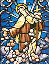

El mundo es chico, ya se sabe. Y algunos mundos son más chicos.
En e-cristians. han publicado esta semana un artículo traducido; autor: Mark Shea, colega blogger ... si se me permite.
Sobre la historicidad de la resurrección de Jesús. No está mal; aunque, en general, la apologética no me resulta particularmente sabrosa. Pero no está mal.
Sta. Teresita:
< 33/40 >
1897. Agonía y muerte (24 años)
Obligada a pasar cada vez más tiempo en su celda, Teresa se ve decaer sin perder la alegría.
Empieza la cuaresma, tratando de observar los ayunos
de la orden, pero su salud empeora rápidamente.
A partir de abril (ya los signos de la tuberculosis
son evidentes) debe ir renunciando progresivamente
a sus oficios, al cuidado de las novicias...
En ese tiempo Paulina empieza a tomar notas de todo lo que dice su hermana; será el "Cuaderno Amarillo", que formará la parte central de las "Ultimas conversaciones".
A principios de junio, una crisis, seguida de
una mejoría.
Poco antes, el 5 de junio la priora (a sugerencia de Paulina) le manda
que escriba una continuación de sus "Recuerdos" de juventud
(Manuscrito A). Este será el "Manuscrito C" (capítulos X y XI)
acaso el más importante —donde habla del caminito—.
Lo escribirá de a ratos, y en julio no podrá ya continuarlo.
El 6 de julio tiene dos hemoptisis violentas,
el 8 es llevada a la enfermería —que no abandonará más—.
El médico le da pocos días de vida. Sin embargo, resistirá casi
3 meses más, con medio pulmón;
dolores horribles, y sin sedante -morfina-
porque la priora no quiso autorizar su uso.
Se las arregla todavía para escribir 18 cartas,
hacer sus monadas
y aleccionar a las monjas...
En agosto sólo puede hablar de
a ratos. Celina es su enfermera.
-
Para darle ánimos, su hermana María le pintaba una
muerte "devota": los ángeles que vendrían a recibirla,
escoltando a Jesús, resplandecientes de hermosura, etc...
Teresa respondió:
Toda esa imaginería no me hace ningún bien, yo sólo puedo vivir en la verdad.
Por eso mismo, nunca he pedido tener visiones. En la tierra no se pueden ver los ángeles y el cielo tal como son... prefiero esperar a después de la muerte.
(agosto)
...es muy fácil escribir cosas bonitas
sobre el sufrimiento. Pero escribir no significa
nada...
"Madre ... esto es la agonía ... ? ¿Cómo haré
para morir ? Yo no voy a saber morir!"
(fines de septiembre)
Si supieras lo que es ahogarse! ....
Todo lo que he escrito sobre mis deseos de sufrir,
al fin de todo, es una gran verdad... Y no me arrepiento
de haberme entregado al Amor.... No, no me arrepiento;
al contrario....
(30 de septiembre)
Murió ese día, a las siete de la tarde, ante toda la comunidad reunida.
«Tenía asido el crucifijo tan fuertemente que hubo que arrancárselo de las manos para amortajarla. Sor María del Sagrado Corazón y yo cumplimos ese oficio con sor Amanda de Jesús, y comprobamos al hacerlo que su cuerpo no aparentaba tener más de 12 o 13 años» (testimonio de Paulina).
Su fiesta es el 1 de octubre.
Sea A un espectador consciente de la siguiente situación:
- B padece un mal. [1]
- A puede [2]
extirpar el tal mal .
-
A tiene la obligación moral de extirpar el mal de B.
Distínganse cuidadosamente los planos de cada concepto; púlanse los silogismos. Elucídese y enmárquese todo el argumento, con todos sus considerandos, distingos y precisiones.
Revísese todo.
Ya está ?
Excelente.
Verifíquese ahora el desempeño del argumento,
al efectuar la siguiente asignación de variables:
-
A = Jesucristo
B = la humanidad [3]
Si algo no cierra, bórrese todo y empiécese de nuevo.
-
[1] Asúmase el mayor grado de abstracción-generalidad, sin particularizar:
B puede ser una persona, un grupo de personas, una nación, un mundo;
el mal puede ser un sufrimiento puro y sin intervención de terceros, puede
ser un mal que se comete contra él o que el mismo B comete contra otro.
[2] ... en el sentido físico de la palabra : "está en su poder"
[3] Puede reemplazarse la segunda por subconjuntos, o por males particulares: "los hombres que sufren hambre", "los enfermos", etc. También puede reemplazarse la primera por "Dios" a secas, en cuanto Dios Creador y Providente -y dando por supuestos sus atributos de Bondad y Omnipotencia.
Hace una docena de años, para estos tiempos, decidí (habría que entrecomillar, tal vez) que la Pascua por venir tenía que ser la última que yo pasara fuera (de la Iglesia); y así fue, aunque me llevó unos cuantos meses decidirme de veras a pegar el salto.
Y para estos tiempos, seguramente hay muchos que también están entrando, o volviendo; en los programas del RCIA (catequesis para conversos adultos en EEUU, o algo así) suele elegirse la Pascua como fecha de recepción oficial. Por lo menos, tenemos entre los bloggers estos dos; y nos alegramos con ellos, y con los demás.
-
«
...Si alguien me hubiera dicho hace sólo 16 meses atrás
que algún día iba a ser católico -y mucho menos en la Pascua de 2003-
no hubiera podido parar de reírme.
Yo , católico ?? Sí, es una linda iglesia ... pero es una iglesia. Y por más fe que tuviera en Cristo, sólo esperaba visitar una iglesia para mi casamiento y mi funeral. Yo, que estuve cerca de armar un grupo estudiantil en el campus con el nombre "Centro de Teología No Ortodoxa", someterme a la iglesia institucional más dogmática y más comprometedora... Yo, que predicaba activamente para convencer a mis compañeros que todas las iglesias son intrísecamente corruptas, que debíamos ser "espirituales pero no religiosos".... Bueno, digamos que no me la vi venir.... »
[Will]
Sta. Teresita:
< 32/40 >
1896. La noche (23 años)
En marzo, nueva priora (vuelve María de Gonzaga) y nueva vida para el convento.
A Teresa le ofrecen el puesto de maestra de novicias; pero, con 23 años,
eso era un poco irregular... Teresa declina el cargo, pero
de hecho ejerce esa función ... hasta que el cuerpo aguante.
Sigue entonces en el noviciado, con rango ambiguo, a cargo
de cinco novicias; y con los demás -humildes- oficios del convento.
Pero este año será especial.
Una Pascua (abril) rodeada de dos acontecimientos:
Teresa recibe la noticia con alegría, y pasa una Pascua feliz. Sólo la priora se entera; sus hermanas lo sabrán mucho después.
-
Durante los días tan gozosos del tiempo pascual, Jesús me hizo conocer por experiencia que
realmente hay almas que no tienen fe, y otras que, por abusar de la gracia, pierden ese precioso
tesoro, fuente de las única alegrías puras y verdaderas.
Permitió que mi alma se viese invadida por las más densas tinieblas, y que el pensamiento del cielo, tan dulce para mí, sólo fuese en adelante motivo de lucha y de tormento...
Esta prueba no debía durar sólo unos días, o unas semanas: no se extinguirá hasta la hora marcada por Dios..., y esa hora no ha sonado todavía... [...]
Cuando quiero que mi corazón, cansado por las tinieblas que lo rodean, descanse con el recuerdo
del país luminoso por el que suspira, se redoblan mis tormentos.
Me parece que las tinieblas,
adoptando la voz de los pecadores, me dicen burlándose de mí:
«Sueñas con la luz, con una patria
aromada con los más suaves perfumes;
sueñas con la posesión eterna del Creador de todas esas
maravillas; crees que un día saldrás de las nieblas que te rodean.
¡Adelante, adelante!
Rogocíjate de la muerte que te dará, no lo que tú esperas,
sino una noche más profunda todavía, la noche de la nada».
Madre querida, la imagen que he querido darle de las tinieblas que oscurecen mi alma es tan imperfecta como un boceto comparado con el modelo. Sin embargo, no quiero escribir más, por temor a blasfemar... Hasta tengo miedo de haber dicho demasiado...
Que Jesús me perdone si le he disgustado. Pero él sabe muy bien que, aunque yo no goce de la alegría de la fe, al menos trato de realizar sus obras. Creo que he hecho más actos de fe de un año a esta parte que durante toda mi vida. [...]
Madre querida, quizás le parezca que estoy exagerando mi prueba. En verdad,
si usted juzga por los sentimientos que expreso en los poemitas que he escrito este año,
debo parecerle un alma llena de consuelos, para quien casi se ha rasgado
ya el velo de la fe.
Y sin embargo... no es ya un velo para mí,
es un muro que se alza hasta los cielos y que cubre el
firmamento estrellado...
Cuando canto la felicidad del cielo y la eterna posesión de Dios, no experimento la menor
alegría, pues canto simplemente lo que quiero creer.
...
Ms C
Poco después, la priora le asigna otro "hermano espiritual", el P. Roulland, misionero en China, con correspondencia; en junio le envía la primera carta. Y en octubre, la priora la autoriza a cartearse con el otro seminarista.
Es el tiempo más expansivo de Teresa; lee a San Pablo
y a Isaías (los "universalistas" de la Biblia).
De su "ejercicio docente", de sus cartas y sus charlas,
y de su vida, todo lo cual respira seguridad,
libertad, alegría y plenitud (en una palabra: santidad)
sus hermanas sospechan que están por perder algo
cuyo valor no entienden del todo. Y en los ejercicios espirituales
de septiembre ("tal vez los últimos", dice
la misma Teresa), María le pide un "recuerdo"
por escrito, un resumen de su "doctrinita".
Entonces, en esos cuatro días Teresa escribe el impresionante "Manuscrito B",
que formará un capítulo de la "Historia de un alma"
(actualmente el capítulo 9; en las primeras ediciones
figuraba al final).
Su salud tiene altibajos; en octubre parece mejorar,
hace vida normal y solicita penitencias adicionales.
Cada vez más tentada, escribe el Credo con su sangre
y lo lleva siempre junto a su corazón. Y transcribe estas palabras
de Isaías:
-
Cuando partas tu pan con el hambriento y llenes
de consuelo al afligido, brillará tu luz en las tinieblas,
tu oscuridad se volverá mediodía (Is. 58,10)
En el convento reciben una petición del Carmelo de Saigón, y Teresa se plantea la posibilidad de ofrecerse a ir. Pero, a fines de año, la llegada del invierno trae su recaída definitiva.
J. R. R. Tolkien participó como combatiente en la Primer Guerra Mundial; su hijo Christopher, en la Segunda. Durante los años 1944-1945, mientras escribía lo que sería el segundo tomo del Señor de los Anillos, (y contemplaba cómo sus compatriotas preferían seguir el consejo de Boromir al de Gandalf) escribió a su hijo varias cartas, relatando sus progresos en la redacción del libro y hablando de esto y de aquello.
Van algunos fragmentos, extraídos para la ocasión. Acá hay algo más.
-
No se
puede luchar con el Enemigo con su propio Anillo, sin convertirse uno a su vez
en Enemigo; pero desdichadamente la sabiduría de Gandalf parece haber
desaparecido con él hace mucho en el Verdadero Oeste ....
...Mis sentimientos [*] son más o menos los que habría experimentado Frodo si hubiera descubierto que algunos Hobbits aprenden a cabalgar las aves de los Nazgúl «para la liberación de la Comarca».
Aunque en este caso, como no conozco nada sobre el imperialismo [**] británico o americano en el Lejano Oriente que no me llene de dolor y repugnancia, me temo que no tengo el apoyo de un chispazo de patriotismo en lo que resta de esta guerra. Si fuera un hombre libre, no daría ni un penique para ella, figúrate si daría un hijo....
El estúpido desperdicio de la guerra es tan enorme, no sólo material, sino también moral y espiritual, que desconcierta a quienes tienen que soportarlo.... millones separados los unos de los otros, estremecidos, prodigándose en días sin provecho... aparte de la tortura, el dolor, la muerte, la desgracia, la injusticia. Si la angustia fuera visible, casi la totalidad de este planeta anochecido estaría envuelto en una oscura nube de vapor, oculto de la mirada asombrada de los cielos.
Y las consecuencias de ella serán en lo fundamental malas, históricamente consideradas. Pero el plano histórico no es por supuesto el único. Todas las cosas y los hechos tienen un valor por sí mismos, aparte de sus «causas» y «efectos». Ningún hombre puede apreciar lo que está realmente acaeciendo sub specie aeternitatis....
... todas las "Grandes Cosas" planificadas en grande le dan esa sensación a la persona en el potro del tormento, aunque en general funcionan y cumplen su cometido. Un cometido en definitiva malo. Porque estamos intentando conquistar a Sauron con el Anillo. Y (según parece) lo lograremos. Pero el precio es, como lo sabrás, criar nuevos Saurons y lentamente ir convirtiendo a Hombres y Elfos en Orcos. Esto no quiere decir que en la vida real las cosas resulten tan claras como en una historia...
La noticia de hoy acerca de las «bombas Atómicas» es tan aterradora que uno queda aturdido. La completa locura de esos físicos lunáticos al consentir llevar a cabo trabajo semejante con fines belicistas: ¡planear con calma la destrucción del mundo! Semejantes explosivos en manos de los hombres, mientras su condición moral e intelectual declina, es poco más o menos tan seguro como dar armas de fuego a los internos de una cárcel diciendo que se espera que «eso asegure la paz». Pero algo bueno puede surgir de ello, supongo, si las evaluaciones críticas no resultan exageradas: el Japón tendrá que darse por vencido.
Bueno, estamos en manos de Dios. Pero él no mira con buenos ojos a los constructores de Babel.
[*] Se refiere a su aversión por los aviones de guerra; Christopher había entrado en la R.F.A. [**] Se trata de la acepción precisa de la palabra, no del slogan ideológico-yanquifóbico que usan los chicos descerebrados de por acá y por allá; espero que los lectores de este blog no necesiten esta aclaración, pero bueno, nunca se sabe...
Sta. Teresita:
< 31/40 >

La rosa deshojada. La ofrenda al Amor misericordioso.
(para profundizar: el anteúltimo capítulo del libro de Urs von Balthasar)
La imagen de la rosa deshojada es ya un emblema de Teresita
(y así aparece en su iconografía). De niña, gustaba de juntar flores para
regalarlas a Jesús, y arrojar pétalos al paso de la procesión del Corpus.
Y cuando novicia, deshojaba rosas frente al crucifijo del patio; y lo mismo
en su agonía.
Se veía a sí misma como un niño que
deshoja esa rosa -y también como esa misma rosa- y así lo dice en su manuscrito B:
-
No tengo otra forma de demostrarte mi amor que arrojando flores, es decir, no dejando escapar
ningún pequeño sacrificio, ni una sola mirada, ni una sola palabra, aprovechando hasta las
más pequeñas cosas y haciéndolas por amor...
Quiero sufrir por amor, y hasta gozar por amor. Así arrojaré flores delante de tu trono. No encontraré ni una sola en mi camino que no deshoje para ti. Y además, al arrojar mis flores, cantaré (¿puede alguien llorar mientras realiza una acción tan alegre?), cantaré aun cuando tenga que coger las flores entre las espinas, y tanto más melodioso será mi canto, cuanto más largas y punzantes sean las espinas [...] esas naderías te gustarán y harán sonreír a la Iglesia triunfante, que recogerá mis flores deshojadas por amor y las pasará por tus divinas manos, Jesús. Y luego esa Iglesia del cielo, queriendo jugar con su hijito, arrojará también ella esas flores -que habrán adquirido a tu toque divino un valor infinito- arrojará esas flores sobre la Iglesia sufriente para apagar sus llamas, y las arrojará también sobre la Iglesia militante para hacerla alcanzar la victoria
-
—Que esa buena Madre haga esa estrofa por sí mísma,
yo no me encuentro en absoluto inspirada en ese sentido.
Lo que yo quiero es ser deshojada para siempre, para alegrar a Dios.
Y se acabó
Ese salto "en el abismo del amor" toma una forma particular
en su "Ofrenda al Amor Misericordioso" que hizo en 1895
y que relata al final del manuscrito A.
Se trata más o menos de esto:
Ha habido cristianos que tuvieron la idea y el impulso de
"ofrececerse como víctimas a la justicia de Dios para
desviar y atraer sobre sí mismas los castigos reservados a los culpables";
idea que puede parecer delirante y hasta blasfema, como si Dios
tuviera que cobrar multas a los culpables, y uno se ofreciera a pagar...
Sin embargo, la cosa tiene su justificación -mística- y su grandeza;
Teresa lo reconoce, pero no se siente inclinada por ese lado.
Ahora bien: suele oponerse la justicia a la misericordia de Dios (oposición provisional/aparente, claro está). Teresa ve a Dios como Amor, y por lo tanto se inclina a (Balthasar dirá que esa también es "su misión") "mirar todos los atributos de Dios a la luz de su misericordia".
Y entonces tiene su idea novedosa: si es verdad que —de algún
modo misterioso— la justicia de Dios "necesita descargarse"
sobre el mundo, y los hombres se resisten a eso
(y por eso el ofrecerse como víctima de esa justicia,
es un sacrificio heroico -puesto que eso nos duele- pero un sacrificio
útil -puesto que eso colabora con la voluntad de Dios-)...
si eso es (místicamente) verdad para la justicia de Dios... no
será más verdad aún para
el amor misericordioso de Dios ? Acaso entregarse
totalmente —por uno y por todos— al Amor de Dios no es
para nuestra naturaleza tan terrible como entregarse a su justicia ?
Acaso no hace falta un abandono y una entrega total para
recibir ese amor ? Si es así,
también habrá una vocación de víctima para esa entrega,
y también Dios —ansioso de incendiar el mundo—
"necesita" esas víctimas.
Teresa siente un entusiasmo enorme al descubrir esta idea grandiosa
(que espero no haber falseado),
y que corona de alguna manera su deseo de
consumirse por puro amor, de deshojarse para dar el gusto a Dios.
Y se ofrece así
como "víctima de holocausto al Amor misericordioso" el 9 de junio
de 1895 (previa autorización de Paulina, priora);
siguiendo una fórmula que ella misma redactó; y dos días
después convence a Celina para seguirla.
Los frutos se verán pronto...
Al milagrito de ayer (gracias a Disputations por el perfecto resumen, quizás mejor que el original), se suma hoy uno que me llega vía e-cristians: esta página de los cartujos . Más precisamente, de la Cartuja de Santa María de Montalegre (pero habla también de la cartuja en general).
Un sitio muy lindo, con muy buen criterio en la navegación, la estética y los contenidos.
Pasen y vean.
Los cartujos son los monjes proverbialmente silenciosos.
Y a uno, con este carácter que le ha tocado en suerte, estos tipos
le resultan particularmente simpáticos. Y esas fotos...
se me hace agua la boca....
-
La finalidad primera de la Orden de la Cartuja es la de glorificar a Dios. Sus monjes y monjas dedican y consagran su vida entera a amarle, a contemplarle. Todo lo demás se circunscribe y es consecuencia de ello.
La verdadera razón de ser de los miembros de la Cartuja, no se halla ni en su santificación personal, ni en su misión apostólica oculta, sino que reside únicamente en Dios.
El monje cartujo, la monja cartuja, al retirarse del mundo como los primeros Padres del Desierto, lo hace para glorificar a Dios. Su retirada no significa en ningún caso, desprecio o despecho de los hombres. Es fruto del amor de Dios, de su llamada.
La Cartuja es su desierto. En la soledad y el silencio, que le proporciona el monasterio, y con la ayuda de la Gracia, el monje y monja cartujo, alcanza una más íntima unión con Dios y, a través de Él, con toda la humanidad. Y, en esa unión, en la contemplación, adora a Dios, le alaba, le da gracias, se deja seducir por Él y se entrega a Él en nombre de todos los hombres. Cumple así la misión que le ha encargado la Iglesia de que sea, en nombre de todos, en solidaridad fraterna con todos, un alma en continua oración.
Los cartujos, como otros monjes dedicados a la contemplación, cumplen también la función de intercesión ante Dios rezando, por vivos y difuntos, cada día, en todos los oficios litúrgicos y en la Eucaristía.
Al mismo tiempo, por la contemplación, por el encuentro i la íntima unión con Dios, los monjes y monjas cartujos son y dan, al mundo, testimonio de que Dios existe y que puede llenar el corazón del ser humano.
...
Actualizado: Ignacio me aporta:
1. Lo de "proverbialmente silenciosos" mejor le cae a los trapenses que a los cartujos; es verdad, me los confundo a veces... bueno, son órdenes emparentadas.
2. Dos direcciones : chartreux.org (el sitio general de los cartujos, con links a muchos conventos) y auladei.es (otro monasterio cartujo; esta página tiene un diseño un poco recargado-pretencioso para mi gusto).
Muy buenos —para variar — posts en Disputations; este y este, sobre el tema de candente actualidad, allí, aquí y en todas partes. Ver también las discusiones de los comments, de una calidad insólita (digo, para lo que son las discusiones que uno encuentra en otros weblogs, y en otros ámbitos de este mundo...).
Actualizado: Si los links tiran error -problemas con los archivos- entrar a la página principal y buscar las entradas del 6 al 9 de abril.
Sta. Teresita:
< 30/40 >
Madurez (21-22 años)
Años 1894 y 1895, con Paulina de priora.
Ella sigue en el noviciado, (si bien la maestra
"oficial" de novicias es la anterior priora,
María de Gonzaga) ; ejerce diversos -humildes-
oficios en el convento:
pintura (estampas y ornamentos), portería,
sacristía, ropería.
Los acontecimientos
principales son:
- fines 1893: empieza a escribir poesías y obras de teatro, todo para recreación del convento; ella misma representa a Juana de Arco (de ahí la foto, y la del post anterior ; con pelo postizo, es de creer...).
- enero 1894: comienzan sus problemas de salud (garganta)
- junio 1894: ingresa sor María de la Trinidad, postulante de 20 años. Al principio Teresa, que la toma a su cuidado, se las ve difícil con esta carmelita no muy educada; (carta 167). Después, su "conejito montés" tendrá una gran intimidad con su maestra.
- julio 1894: muerte del padre
- septiembre 1894: Celina entra al Carmelo; toma el hábito en febrero de 1895 y profesa en febrero de 1896
- fines 1894: Teresa se topa con lo de «Aquel que sea pequeñito, que venga a mí ... (Proverbios 9,4)» (lo relatará después en su Manuscrito C). Descubre por entonces su "caminito", el de la pequeñez, la infancia espiritual [más sobre esto en otro post].
- enero 1895: Paulina le pide que escriba sus recuerdos de infancia y juventud. Será el "Manuscrito A" (primera parte de la "Historia de un alma"). Teresa lo va escribiendo con cuentagotas, y lo entrega en enero de 1896 a su hermana priora; ésta lo recibe sin darle importancia -intencionalmente- y lo guarda sin leerlo durante un tiempo.
- junio 1895: En la acción de gracias tras la fiesta de la Trinidad, Teresa se siente impulsada a ofrecerse como "víctima" al Amor Misericordioso. Logra la autorización de la priora, convence a Celina que la imita, y pone su Ofrenda por escrito. En octubre Paulina hace "revisar" la fórmula por un sacerdote. [más sobre esto en otro post]
- julio 1895: Leonia, tras su segundo intento fracasado de vida religiosa, la visita -y llora a mares- en el convento. La acompaña su prima María Guerin, quien ingresa al Carmelo al mes siguiente.
- octubre 1895: Paulina la designa -en secreto- "hermana espiritual" de un seminarista (P. Belliere). Por ahora, su función se limita a rezar por su "hermano" (tentado y con dificultades). Es una sorpresa gratísima para Teresa, que siempre había lamentado no tener un hermano sacerdote.
Y si el cambio anterior de priora -en 1893- había venido bien a Teresa, éste otro, en estos momentos... también le será de provecho (ya se sabe... a los santos todo les sale bien, el universo juega para ellos).
Sta. Teresita:
< 29/40 >
1893: Paulina priora. Año de plenitud (20 años)
En febrero de 1893 las monjas eligen nueva priora;
sorpresivamente, la elegida es Paulina.
Será un año muy especial para Teresa, año de plenitud,
de euforia y de paz.
«Grande y fuerte,
aire de niña, tono de voz y expresión idem, que ocultan
una sabiduría, una perfección y una perspicacia de
cincuenta años. Espíritu siempre sereno, dueña
de sí en todo y para todos... Mística y cómica,
todo se le da ... es capaz de hacernos llorar de devoción,
doblarnos de risa en los recreos.» (carta de María
a Leonia, verano de 1893).
Esta etapa venía anunciada ya a fines del 1892,
las cartas ganan en alegría y en mística... a su modo.
Crece también su devoción mariana («
María, yo soy más rica que tú; porque tú
tienes a Jesús, mientras que yo, además de tenerlo
a él, te tengo a tí.»).
Las cartas de ese verano de 1893 —sobre todo a Celina— son de una riqueza impresionante. Teresa encuentra su voz.
-
...ser una gota de rocío escondida en la corola divina del Lirio de los valles.
Una gota de rocío, ¿qué hay de más sencillo y de más puro? ...
Celina es una gotita de rocío que no ha sido
formada por las nubes, sino que ha caído de ese hermoso cielo que es su
patria. Durante la noche de la vida, su misión es esconderse en el corazón de
la Flor de los campos. Ninguna mirada humana debe descubrirla, sólo el cáliz
que contiene la pequeña gotita conocerá su frescor.
¡Dichosa gotita de rocío, tan sólo conocida de Jesús...!,
...es preciso ser pequeños, ¡pequeños
como gotas de rocío...! ¡Y qué pocas son las almas que aspiran a ser así de
pequeñas ...! Pero tal vez digan: ¿acaso no son mucho más útiles el río y el
arroyo que la gota de rocío? ¿Para qué sirve ésta? No sirve más que para
refrescar durante unos instantes a una flor de los campos que hoy es y mañana
ha desaparecido...
Sin duda, estas personas tienen razón: la gota de rocío sólo sirve para eso.
Pero esas personas no conocen a la Flor de los campos que ha querido habitar
en nuestra tierra de destierro y vivir en ella la breve noche de la vida.
Si la conociesen, entenderían el reproche que Jesús hizo una vez a
Marta...
(25 abril)
...Tu Teresa no se encuentra en este momento en las alturas, pero Jesús le enseña a "sacar provecho de todo, del bien y del mal que halla en sí" . Le enseña a jugar a la banca del amor, o, mejor, no, él juega por ella sin decirle cómo se las arregla, pues eso es asunto suyo y no de Teresa. Lo que ella tiene que hacer es abandonarse, entregarse sin reservarse nada para sí, ni siquiera la alegría de saber cuánto rinde su banca. Pero, después de todo, ella no es el hijo pródigo, y por tanto no vale la pena que Jesús le ofrezca un festín, porque "ella está siempre con él" [1].
Nuestro Señor quiere dejar "las ovejas fieles en el desierto". ¡Cuánto me dice
esto...! Él está seguro de ellas: no pueden descarriarse, porque están
cautivas del amor. Por eso Jesús las priva de su presencia sensible para
ofrecer sus consuelos a los pecadores; y si las lleva al Tabor, es por breves
instantes: los valles son, por lo regular, el lugar de su descanso. "Allí es
donde él sestea a mediodía".
(6 de julio)
...Dice santa Teresa [2] que es necesario alimentar el amor. Cuando estamos en tinieblas, en sequedades, la leña no se encuentra a nuestro alcance; pero ¿no tendremos que echar en él al menos unas pajitas? Jesús es lo bastante poderoso para alimentar él solo el fuego; sin embargo, le gusta vernos echar en él algo que lo alimente. Es éste un detalle que le agrada, y entonces arroja él al fuego mucha leña. A él nosotras no le vemos, pero sentimos la fuerza del calor del amor.
Yo lo he visto por experiencia: cuando no siento nada, cuando soy INCAPAZ de
orar y de practicar la virtud, entonces es el momento de buscar pequeñas
ocasiones, naderías que agradan a Jesús más que el dominio del mundo e incluso
que el martirio soportado con generosidad. Por ejemplo, una sonrisa, una
palabra amable cuando tendría ganas de callarme o de mostrar un semblante
enojado, etc., etc....
(23 julio )
...Jesús se hace pobre para que nosotras podamos darle limosna, nos tiende la mano como un mendigo, para que cuando aparezca en su gloria el día del juicio, pueda hacernos oír aquellas dulces palabras: "Venid vosotros, benditos de mi Padre, porque tuve hambre y me disteis de comer, tuve sed y me disteis de beber, fui forastero y me hospedasteis, estuve enfermo y en la cárcel y me socorristeis".
El mismo Jesús que pronunció estas palabras es quien busca nuestro amor, quien
lo mendiga... [3] Se pone, por así decirlo, a nuestra merced. No quiere tomar nada
sin que se lo demos, y hasta la cosa más insignificante es preciosa a sus ojos
divinos...
(2 agosto)
(y también)
En septiembre de 1893 termina el tiempo oficial en el noviciado, pero solicita quedarse. Es la "decana" del noviciado, y de hecho ejerce una especie de tutela sobre el resto.
Notas:
[1] Es notable (y muy original, y chocante) esto que hace Teresa (y no es la única vez) : identificarse con "el otro hermano" de la parábola del hijo pródigo. Como, en el párrafo siguiente, con las ovejas que "no se perdieron"...
Von Balthasar vería acá un rasgo problemático de su espiritualidad, que —culpa de circustancias que no vienen al caso— la sustrajeron al sentido del pecado ... Cuestión muy espinosa y discutible.
[2] Se trata de Teresa de Jesús, claro está.
[3] Idea que hubiera aplaudido Leon Bloy (tan alejado de Teresa
en otros aspectos). En el fondo, él diría, Jesús es el único
mendigo de verdad, el único que tiene "derecho a mendigar";
al pobre se le da -si no el derecho- el privilegio
de mendigar -y por lo tanto de tomar en cierta manera el lugar
de Cristo-.
Alguna vez me han dado ganas de contestar con esta explicación
cuando alguna adolescente porteña de clase media
me ha pedido plata en la calle, con esa especie
de orgullo por no tener vergüenza ("si, yo te pido
y no tengo drama, ves...") .
No sería buena idea, indudablemente.
Tiene gracia...
El domingo en misa pensaba, con un poco de melancolía, que esta cuaresma que está terminando no ha sido de mis más aprovechadas (lo cual tampoco sería mucho decir); y recordaba mi propósito de "pasarla con Teresa", y dudaba de si estas cositas que estoy escribiendo sirvan para eso, o para algo.
Y me encomendaba a ella... (y en relación a lo del evangelio, se me ocurrió después, podría pedirle que, ya que yo trato de "estar con ella", ella quiera "estar conmigo").
Bueno. Hoy lunes, voy a dar clases a la facultad,
y antes me detengo a almorzar; caigo en un restaurante
desconocido para mí; medio oculto, poca gente.
Mientras espero el pedido, solo, abstraído, pensando
un poco en lo anterior y un poco en la clase a dar,
veo que en la pared de enfrente han colgado una foto
antigua enmarcada: la primera comunión de un chico
que hoy tendrá canas, en el mejor de los casos.
Curioso. Pero claro, no es que se
trate de un restaurant religioso... será que estamos
en San Telmo, barrio de antigüedades, me digo.
Y sí, alcanzo a ver más lejos otro foto antigua, un matrimonio
de principios de siglo, esas poses tiesas, ella sentada
y él de pie...
Bueh. Mi mente sigue en sus cosas,
mientras pellizco el pan, y echo una mirada a la pared
contra la que estoy sentado. Y exactamente arriba de la mesa,
a centímetros de mi cabeza, como haciéndome companía,
hay otra antigüedad: en un marco circular de madera
—unos veinte centímetros— un bajo relieve en
bronce de una monja -medio cuerpo- sosteniendo
una cruz y unas rosas.
Y sí, era ella nomás.
Y apostaría que no hay otro restaurante en todo Buenos Aires que tenga una imagen de Teresita; (y apostaría también que los dueños no tienen la menor idea de quién es).
Sta. Teresita:
< 28/40 >
Dos anotaciones de las "Ultimas conversaciones", del 15 de septiembre (dos semanas antes de su muerte).
-
— Cuando estés en el cielo, tus grandes sufrimientos
de ahora te parecerán poca cosa, ya verás —
le decía Paulina, para darle ánimos.
— Ya aquí en la tierra me parecen muy poca cosa....
-
Esa noche, durante la "recreación":
Cuando sor Genoveva [Celina] decía hace poco
a sor Marta, que preguntaba por mí: «Está muy cansada»...
yo pensaba para mis adentros:
Verdad, cuánta razón tiene! Sí, soy como un viajero
cansado y agotado, que cae sin fuerzas al llegar
el fin del viaje.
... Sí... pero caigo en los brazos de Dios.
Sta. Teresita:
< 27/40 >
Profesión. En el noviciado. "Los años oscuros" (17-19 años)
Con la oposición del superior del Carmelo —pero la bendición
del obispo—
Teresa hace sus votos perpetuos el 8 de septiembre de 1890.
La profesión
fue precedida, una vez más, de un retiro en la
aridez total:
-
...debería haberte hablado de los ejercicios espirituales que precedieron a mi
profesión. Esos ejercicios, no sólo no me proporcionaron ningún consuelo, sino
que en ellos la aridez más absoluta y casi casi el abandono fueron mis
compañeros. Jesús dormía, como siempre, en mi navecilla.
¡Qué pena!, tengo la impresión de que las almas pocas veces le dejan dormir tranquilamente dentro de ellas. Jesús está ya tan cansado de ser él quien corra con los gastos y de pagar por adelantado, que se apresura a aprovecharse del descanso que yo le ofrezco. No se despertará, seguramente, hasta mi gran retiro de la eternidad; pero esto, en lugar de afligirme, me produce una enorme alegría...
Verdaderamente, estoy lejos de ser santa, y nada lo prueba mejor que lo que
acabo de decir. En vez de alegrarme de mi sequedad, debería atribuirla a mi
falta de fervor y de fidelidad. Debería entristecerme por dormirme (¡después
de siete años!) en la oración y durante la acción de gracias. Pues bien, no me
entristezco.
Pienso que los niños agradan tanto a sus padres mientras
duermen como cuando están despiertos; pienso que los médicos, para hacer las
operaciones, duermen a los enfermos. En una palabra, pienso que «el
Señor conoce nuestra masa, se acuerda de que no somos más que polvo».
Siguen dos años y medio sin muchos acontecimientos (bueno ... toda la vida de Teresita fue escasa de acontecimientos, pero acá son menos todavía, incluso en lo interior; lo que se refleja en los escritos —manuscrito y cartas—). Son sus "años oscuros", que terminarán en febrero de 1893, cuando Paulina es elegida priora del convento.
Estos años transcurren en el noviciado, completando su formación.
Tiene menos contactos aún con sus hermanas carnales: con Paulina, por un cambio de oficio; con María, porque ella sale del noviciado. En cambio, se escribe mucho con Celina; como siempre, Teresa está inquieta por el futuro de su hermana en el mundo.
En estos tiempos lee a San Juan de la Cruz. En octubre de 1891 (18 años), logra -por una vez- sacar provecho de un retiro espiritual predicado por un sacerdote franciscano (P. Prou):
-
Normalmente, los ejercicios predicados me resultan más penosos
todavía que los que hago sola. Pero ese año no fue así.
Había hecho con gran fervor una novena de preparación, a pesar del presentimiento íntimo que tenía, pues me parecía que el predicador no iba a poder comprenderme, ya que se dedicaba sobre todo a ayudar a los grandes pecadores y no a las almas religiosas. Pero Dios, que quería demostrarme que sólo él era el director de mi alma, se sirvió precisamente de este Padre, al que yo fui la única que apreció en la comunidad...
Yo sufría por aquel entonces grandes pruebas interiores de todo tipo (hasta
llegar a preguntarme a veces si existía un cielo ). Estaba decidida a no
decirle nada acerca de mi estado interior, por no saber explicarme. Pero
apenas entré en el confesonario, sentí que se dilataba mi alma. Apenas
pronuncié unas pocas palabras, me sentí maravillosamente comprendida, incluso
adivinada. Mi alma era como un libro abierto, en el que el Padre leía mejor
incluso que yo misma...
El me lanzó a velas desplegadas por los mares de
la confianza y del amor, que tan fuertemente me atraían, pero por los que no me
atrevía a navegar...
Me dijo que mis faltas no desagradaban a Dios, y que,
como representante suyo, me decía de su parte que Dios estaba muy contento de
mí...
En mayo de 1892 su padre es sacado del hospital, para ser cuidado en su casa. Está irrevocablemente "ido", sin embargo; lo llevan al convento para su última entrevista con Teresa, en la que sólo dice las palabras: «Al cielo».
Una vez saqué una cuenta de e-mail que ya había sido usada por algún otro. Como consecuencia, durante un tiempo recibí emails de distintos "servicios" a los que el anterior propietario estaba suscripto. Algunos no muy edificantes...
Después, al mudarme de casa, heredé -en lugar de
una cuenta de email- una línea telefónica. Y hoy,
casi dos años después,
sigo encontrando en mi contestador
invitaciones a reuniones, actos y elecciones radicales.
No sé con qué me quedo...
... venía bien la misa de hoy (parroquia nueva), sermón pasable, liturgia correcta, y canciones pasables... hasta que la
Y bueh... igual, todo es poca cosa frente al evangelio de hoy:
-
...En verdad, en verdad os digo: si el grano de trigo no cae en tierra y muere, queda él solo; pero si muere, da mucho fruto.
El que ama su vida, la perderá; y el que odia su vida en este mundo, la guardará para una vida eterna.
Si alguno me sirve, que me siga, y donde yo esté, allí estará también mi servidor. Si alguno me sirve, el Padre le honrará.
Ahora mi alma está turbada. Y ¿que voy a decir? ¡Padre, líbrame de esta hora! Pero ¡si he llegado a esta hora para esto!
Padre, glorifica tu Nombre.» Vino entonces una voz del cielo: «Le he glorificado y de nuevo le glorificaré.»
La gente que estaba allí y lo oyó decía que había sido un trueno. Otros decían: «Le ha hablado un ángel.»
Jesús respondió: «No ha venido esta voz por mí, sino por vosotros.
Ahora es el juicio de este mundo; ahora el Príncipe de este mundo será echado fuera.
Y yo cuando sea levando de la tierra, atraeré a todos hacia mí.»
Busco en la Catena Aurea de Santo Tomás ... San Agustín lo interpreta
como recompensa. Crisóstomo apunta un poco al otro plano, pero no
me resulta muy claro: "Manifiesta de esta manera
que la resurrección sucederá a la muerte. Dice «En donde yo estoy...»
porque antes de la resurrección Cristo estaba en los cielos [?];
elevemos, pues, allí nuestro corazón y nuestra alma" .
Voy a fijarme en el "Comentario al Evangelio" de Maldonado
(obra notable, del cual tengo la suerte de tener el tomo de San Juan,
justamente). Y me llevo la sorpresa de que justo falta el
análisis de ese versículo... Curioso (Maldonado analiza versículo
por versículo). Nos quedamos con San Agustín, entonces,
que no es poca cosa.